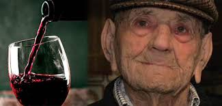

A Vinharia Agnello nasceu do sonho de um imigrante italiano apaixonado por vinhos. Desde 1950, nossa missão é oferecer vinhos de qualidade e momentos memoráveis.
Fundação da Vinharia Agnello por Antonio Agnello, um imigrante italiano apaixonado por vinhos. Início das primeiras colheitas e produção artesanal.
Expansão das vinhedos e início da distribuição de vinhos para outras regiões do Brasil. A Vinharia começa a ganhar reconhecimento nacional.
A Vinharia Agnello conquista diversos prêmios nacionais de vinhos, sendo reconhecida como uma das melhores vinícolas do Brasil.
Expansão para o mercado internacional, com exportação para diversos países da América Latina e Europa.
Início de novos projetos sustentáveis e ecológicos na vinícola, com o objetivo de produzir vinhos de alta qualidade respeitando o meio ambiente.
Antonio Agnello, o fundador da Vinharia Agnello, nasceu na pequena cidade de Verona, na Itália. Desde jovem, desenvolveu uma paixão por vinhos e pela arte da vinicultura. Após se mudar para o Brasil nos anos 40, ele decidiu abrir sua própria vinícola, com a missão de produzir vinhos de alta qualidade que representassem a tradição italiana.
A Vinharia Agnello é uma empresa familiar que continua a ser administrada pela terceira geração da família Agnello. Com o compromisso de manter viva a tradição, os filhos de Antonio Agnello, atualmente lideram a vinícola e continuam inovando com novas práticas sustentáveis.